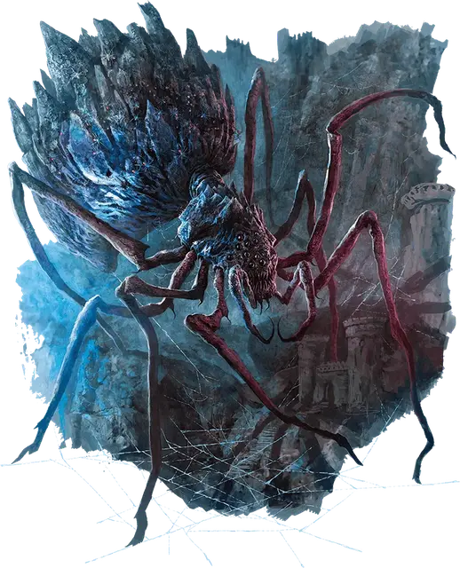

Осадный паук
Citadel Spider
Громадный Монстр, обычно нейтрально-злой

Класс Доспеха 18 (природный доспех)
Хиты 360 (20к20 + 150)
Скорость 50 футов, лазая 50 футов
| мод | спас | ||
|---|---|---|---|
| СИЛ | 26 | +8 | +8 |
| ЛОВ | 10 | +0 | +0 |
| ТЕЛ | 21 | +5 | +5 |
| мод | спас | ||
|---|---|---|---|
| ИНТ | 6 | −2 | −2 |
| МДР | 12 | +1 | +1 |
| ХАР | 9 | −1 | −1 |
Иммунитет к состояниям испуг, истощение, очарование
Чувства слепое зрение 120 футов, тёмное зрение 120 футов, пассивное Восприятие 11
Опасность 18 (20000 опыта)
Бонус мастерства +6
Особенности
Легендарное сопротивление (3/день). Если паук проваливает спасбросок, он может вместо этого сделать спасбросок успешным.
Паучье лазание. Паук может лазать по сложным поверхностям, включая потолки, без совершения проверок характеристик.
Хождение по паутине. Паук игнорирует ограничения перемещения, вызванные паутиной.
Действия
Мультиатака. Паук совершает две атаки Укусом. Он может заменить любую из этих атак использованием Паутинной бомбы.
Укус. Рукопашная атака оружием: +14 к попаданию, досягаемость 20 футов, одна цель. Попадание: 19 (2к10 + 8) колющего урона плюс 7 (2к6) урона ядом.
Паутинная бомба. Дальнобойная атака оружием: +14 к попаданию, дистанция 300 футов/600 футов, одна цель. Попадание: 24 (3к10 + 8) дробящего урона, также цель и все существа в пределах 10 футов от неё должны преуспеть в спасброске Ловкости Сл 19, иначе получат 10 (3к6) урона кислотой и станут опутанными до начала следующего хода паука.
Реакции
Поглощение удара. В ответ на попадание по пауку атакой, его панцирь поглощает часть удара, снижая получаемый урон на 11 (2к10).
Описание
«Осадные пауки не отличаются умом, но в чистой боевой мощи и универсальности им нет равных»
— Кэмлэш, генерал-балор Лолс
Последователи Лолс разводят пауков всех видов и размеров, наполняя их нечистой энергией из Ям Демонической Паутины. Пожалуй, самым страшным представителем подобной мерзости является осадный паук. Существо колоссальных размеров служит мощным оружием и мобильным командным пунктом. Хитиновые клинья на его спине защищают пассажиров и являются врожденным орудием. С помощью него осадный паук может выпускать сферы кислотной паутины, которые удерживают жертву на месте, пока он не перекусит ее своими зазубренными челюстями.